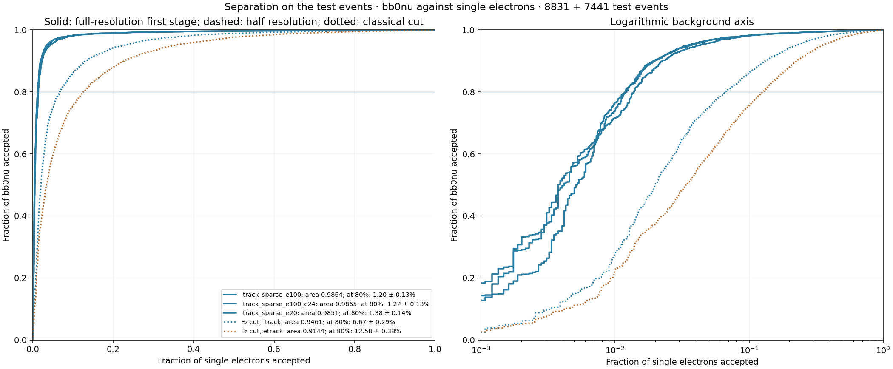
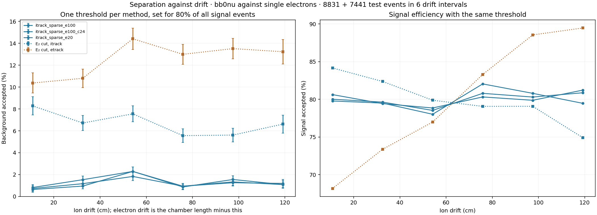
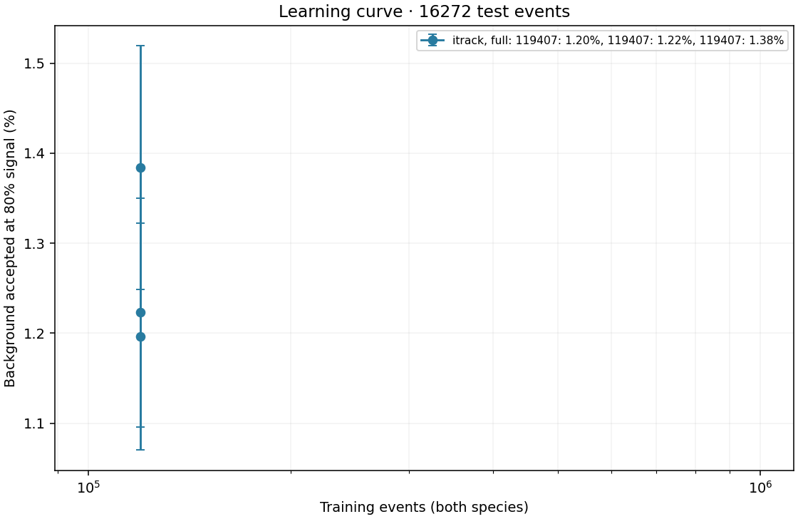
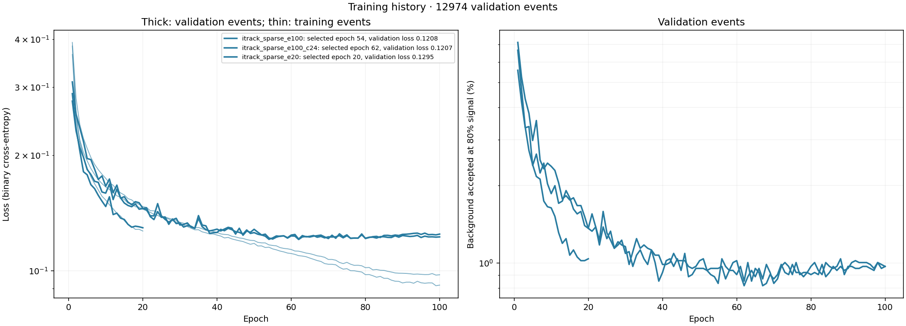
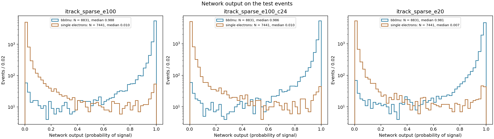

Samples bb0nu_itaca_100k_ion15 and single_electrons_itaca_100k_ion15, events with one component in each track. Test batches [0, 1, 2, 3, 4] (8831 + 7441 events), validation batches [5, 6, 7, 8]; the other batches train. Network and procedure: classification network.
An event is accepted when the network output exceeds a threshold; the threshold of each column keeps that fraction of the signal. The last rows apply the classical cut on E₂, the smaller endpoint energy of the main track, to the same test events. Errors are binomial.
| Training | Input | First stage | Training events | Selected epoch | Area | Background at 90% signal | Background at 80% signal | Background at 70% signal | Background at 60% signal | Time (min) |
|---|---|---|---|---|---|---|---|---|---|---|
| itrack_sparse_e100 | itrack | full | 119407 | 54 of 100 | 0.9864 | 1.92 ± 0.16% | 1.20 ± 0.13% | 0.85 ± 0.11% | 0.63 ± 0.09% | 64 |
| itrack_sparse_e100_c24 | itrack | full | 119407 | 62 of 100 | 0.9865 | 1.99 ± 0.16% | 1.22 ± 0.13% | 0.79 ± 0.10% | 0.55 ± 0.09% | 66 |
| itrack_sparse_e20 | itrack | full | 119407 | 20 of 20 | 0.9851 | 2.24 ± 0.17% | 1.38 ± 0.14% | 0.93 ± 0.11% | 0.69 ± 0.10% | 12 |
| E₂ cut, itrack | itrack | 0.9461 | 13.34 ± 0.39% | 6.67 ± 0.29% | 3.83 ± 0.22% | 2.77 ± 0.19% | ||||
| E₂ cut, etrack | etrack | 0.9144 | 22.74 ± 0.49% | 12.58 ± 0.38% | 7.65 ± 0.31% | 5.11 ± 0.26% |


The same network trained on part of the training events and tested on the same test events.



Numerical results: itrack_sparse_e100 · itrack_sparse_e100_c24 · itrack_sparse_e20.